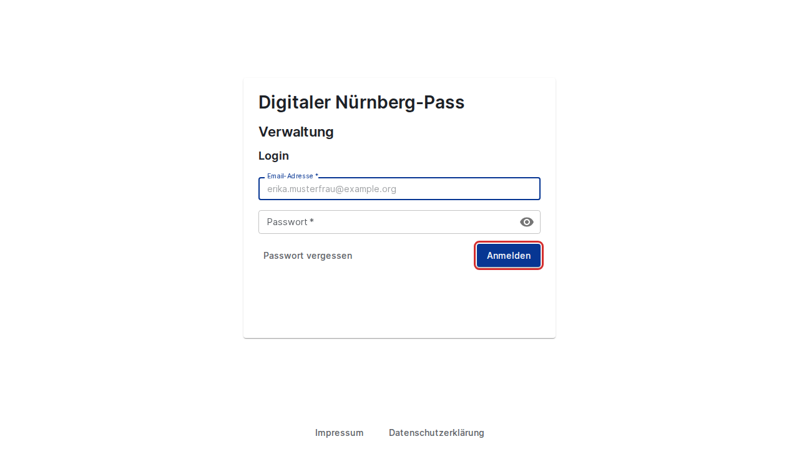
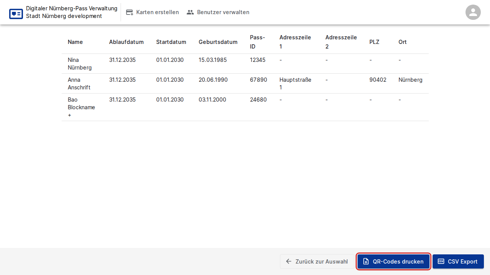
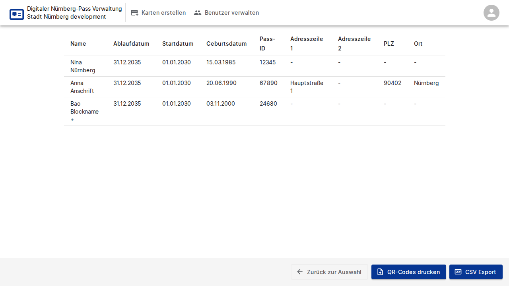
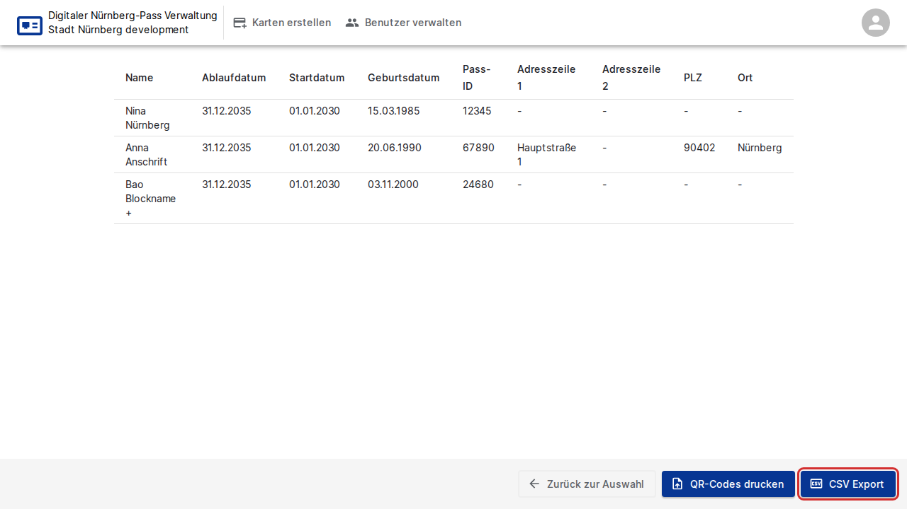

Karten importieren
Karten aus einer CSV-Datei importieren und QR-Codes drucken
Verfügbar für Rollen: Regionsadministrator, Regionsverwalter
Viele Karten auf einmal erstellen Sie über eine CSV-Datei. Sie enthält die Spalten Name, Ablaufdatum, Startdatum, Geburtsdatum und Pass-ID sowie optional Adresszeile 1, Adresszeile 2, PLZ und Ort.
- Öffnen Sie Mehrere Karten importieren.
- Geben Sie Ihre Email-Adresse und Ihr Passwort ein und klicken Sie auf Anmelden.

- Klicken Sie auf Datei wählen und wählen Sie die CSV-Datei mit den Kartendaten aus.

- Klicken Sie auf QR-Codes drucken.

Das System zeigt die Karten aus der Datei in einer Tabelle an und lädt ein PDF mit einer Seite pro Karte herunter.
Importierte Karten als CSV exportieren
Verfügbar für Rollen: Regionsadministrator, Regionsverwalter
- Öffnen Sie Mehrere Karten importieren.
- Geben Sie Ihre Email-Adresse und Ihr Passwort ein und klicken Sie auf Anmelden.

- Klicken Sie auf Datei wählen und wählen Sie die CSV-Datei mit den Kartendaten aus.

- Klicken Sie auf CSV Export.

Das System lädt eine CSV-Datei mit einer Zeile pro Karte herunter, inklusive der Aktivierungscodes.